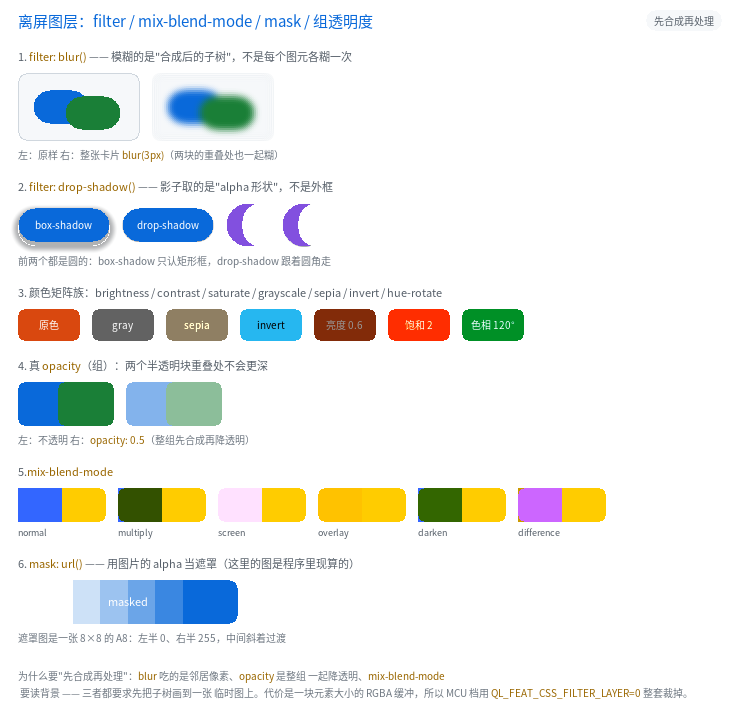

离屏图层：filter / mix-blend-mode / mask / 组透明度

完整程序：example/31_filter/
前面所有绘制都是"一个图元画一次"：背景一块、边框一圈、文字一遍。这条规矩 简单、快，而且 MCU 上不需要任何额外内存。但它表达不了四类效果：
| 想要 | 为什么一图元一次做不到 |
|---|---|
filter: blur(4px) |
模糊要读邻居像素 —— 一个元素内部的图元得先落在一起，否则每块各糊一次，接缝处会亮一条线 |
opacity: 0.5 的组 |
逐图元乘 alpha 时，子元素重叠的地方会叠两次，比别处更暗 |
mix-blend-mode |
混合要读背景像素（它自己画之前那块地方） |
mask: url() |
遮罩要乘在"整个元素合成后的 alpha"上 |
四样东西的共同前提是一句话：先把这棵子树合成到一张临时图上，再整体处理。 这就是"离屏图层"。
.card { filter: blur(3px) drop-shadow(0 4px 4px rgba(0,0,0,.45)); }
.group { opacity: 0.5; }
.blend { mix-blend-mode: multiply; }
.masked { mask: url(alpha8); }
1. 什么时候会自动开图层
不是所有元素都要图层。判据写在 src/ui/qlui.c 的 style_needs_layer()：
| 条件 | 是否开图层 |
|---|---|
写了 filter（任何函数） |
开 |
mix-blend-mode 不是 normal |
开 |
mask 不是 none |
开 |
opacity < 1 且有子节点 |
开（单节点的逐图元乘 alpha 与合成等价） |
| 其余（99% 的元素） | 不开，走原来的单批次路径 |
最后一行很重要：图层是要花内存和带宽的，所以它必须"按需、稀有"。
2. filter
2.1 支持哪些函数
| 函数 | 参数 | 说明 |
|---|---|---|
blur(<N>px) |
0~64 | 9 抽头可分离高斯，抽头间距 = N/2 |
brightness(<倍数>\|<百分比>) |
0~100 倍 | 1.2 与 120% 等价 |
contrast(...) |
同上 | c' = (c-0.5)*k+0.5 |
saturate(...) |
同上 | 标准饱和度矩阵 |
grayscale(...) / sepia(...) / invert(...) |
0~100% | 按比例在"原色"与"效果色"之间插值 |
hue-rotate(<N>deg) |
0~360 | CSS 的固定旋转矩阵（不是 HSL 往返） |
opacity(<0~1>) |
— | 乘在图层 alpha 上 |
drop-shadow(<dx> <dy> [<blur>] [<color>]) |
— | 影子取 alpha 形状，跟着圆角走 |
不支持 url(#svg) —— 会构建期报错。第 4 个长度值 spread 自 B9 起支持
（box-shadow: 0 0 0 8px #BFD7EF），见教程 25_clip_filter。
.a { filter: blur(4px); }
.b { filter: brightness(120%) saturate(1.5); } /* 链式，顺序即应用顺序 */
.c { filter: drop-shadow(2px 3px 4px #123456); }
2.2 drop-shadow 与 box-shadow 的区别
这是最容易搞混的一点：
<div class="moon"></div> <!-- 圆角做出来的月牙 -->
box-shadow认的是边框盒：月牙的影子是一个矩形框的影子；drop-shadow认的是合成后的 alpha：影子是月牙形状。
前者的代价是一次边缘扫描，后者要先把元素画出来再抽 alpha，所以后者一定带图层。
3. 组 opacity
.group { opacity: 0.5; }
老语义（现在是"单节点"的情形）：把 opacity 乘进每个图元的 alpha。
新语义（有子节点时）：整组先合成，再乘。
差别只在重叠处：
两个半透明块重叠 逐图元乘 alpha 组 opacity
██▒▒██ 重叠处 = 0.5+0.5*0.5 重叠处 = 0.5
example/31_filter 的第 4 节就是这个对照 —— 右边两块重叠的地方不比别处深。
4. mix-blend-mode
做了浏览器里最常用的七个：normal / multiply / screen / overlay /
darken / lighten / difference。其余（hue / color / exclusion …）
构建期报错。
.bl { background-color: #3366FF; mix-blend-mode: multiply; }
公式（cb = 背景、cs = 源，都是 0..1）：
| 模式 | 结果 |
|---|---|
multiply |
cb * cs |
screen |
cb + cs - cb*cs |
overlay |
cb < 0.5 ? 2*cb*cs : 1-2*(1-cb)*(1-cs) |
darken / lighten |
min / max |
difference |
abs(cb - cs) |
混合模式读的是背景，所以 GPU 侧要把目标表面那一块先抓成一张纹理再算 （和毛玻璃同一个套路）。
5. mask
.masked { mask: url(alpha8); }
- 只用图片的 alpha（
A8直接取灰度，RGBA8888取 alpha 通道）； - 遮罩被拉伸到边框盒（相当于
mask-size: 100% 100%+mask-mode: alpha）； mask: none表示取消。
mask-image / mask 两个写法都行。mask-position / mask-repeat /
mask-composite 还没做，写了会报错。
6. 代价：一块元素大小的缓冲
| 项 | 数字 |
|---|---|
| 每层缓冲 | 宽 × 高 × 4 字节（预乘 RGBA） |
| 最多嵌套 | QL_CFG_UI_LAYER_MAX_DEPTH（默认 4） |
| 单个图层上限 | 4096×1024（防误用，超了按上限截） |
| 编译期开关 | QL_FEAT_CSS_FILTER_LAYER（MCU 默认关） |
关掉之后 filter / mix-blend-mode / mask 在构建期报错（红线：不静默降级），
opacity 退回逐图元乘 alpha 的老语义。
CPU 侧的图层用"两遍哑光反解"：同一棵子树画两遍（黑底、白底），再解方程
黑底：B = C·a 白底：W = C·a + 255·(1-a)
⇒ a = 255-(W-B)，预乘色就是 B
GPU 侧有真的 RGBA 帧缓冲，只画一遍。两条后端的结果用
test_gl_vs_cpu 的图层用例逐像素对拍（差异 < 0.01%）。
7. 常见坑
text-align/border-radius与滤镜的关系：图层外扩了模糊半径那一圈， 但裁剪仍然按边框盒（含圆角）。所以"圆角卡片 + 模糊光晕"的四个角是干净的 —— 这也是layer_fx_of()里把box和corner一起传给后端的原因。drop-shadow的颜色默认取currentColor（也就是元素的color）， 不写颜色时影子是文字色，不是黑色。filter里的blur与backdrop-filter不是一回事：前者糊自己， 后者糊"自己背后已经画好的东西"。后者不需要图层（就地模糊即可）。- 图层会打断 GPU 的"单批次"：一个带滤镜的元素至少多一次 flush + 一次合成。 所以别给滚动列表的每一行都加 filter。